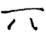
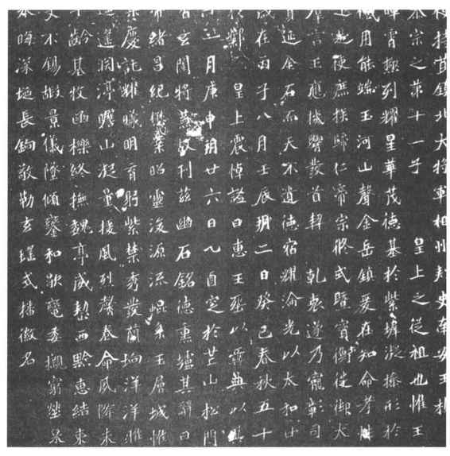
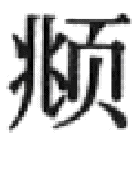

第二节
古代的书法
概说
汉字是一种语素一音节文字而不是拼音文字。拼音文字由若干字母组成，尽管可以写得好或写得坏，还产生了字母的花体写法，仍总的形成不了艺术。汉字则由于结构繁复且多变化，书写汉字很早就成为一种艺术，人们称之为“书法”。又由于汉族和用汉字的人在我国占了绝大多数，通常也就把这种“书法”定为我国特有的艺术。日本和朝鲜半岛等地也讲书法（日本称之为“书道”），则是因为用过或仍用着汉字，受了中国书法的影响。
任何事物都在发展演变，中国的书法自不例外。所以讲书法得从它的发展演变来讲，也就是从书法史来讲才讲得清楚。这又牵涉字体的演变，这虽是文字学的内容，在这里仍不能不讲到。
历史上有名的书法家要不要讲？当然要讲。但要知道这些书法家，只是书法发展到某一阶段产生出来的杰出人物，并非脱离了时代风尚孤立的人物，不要把他们神秘化。
书法要根据什么资料来讲？当然最好根据实物，即古人书写的墨迹。但传世的写在纸或绢帛上的书法家的墨迹，唐和唐以前的几乎没有真的，最好的不过是后人的摹本临本，往往走了样，多数还出于后人伪造，完全不能信据。因此除了先秦时期可利用甲骨、青铜器外，秦汉以来下至魏晋南北朝隋唐主要得用碑刻。碑刻也有缺点，它不论是用朱砂写在石板上，或者写在纸上再摹到石板上，最后都得把笔画刻出凿出，总难免留下斧凿痕而多少失去毛笔书写的气韵，当然更看不到原来用朱砂用墨书写时显出的轻重浓淡。不过它一般不会伪造，比误用了伪造的和临摹失真的所谓墨迹以及据此刊刻的帖要好得多。此外，出土的秦汉魏晋的帛书、简牍书以及敦煌的写经和其他文书同样可供参考，这些很少能伪造，当然也有缺点，即多数并非出于书法家之手，不是上乘之作。再则史传和其他文献上讲到书法之处也值得重视，会发现和碑刻、写经所显示的情况十分一致。宋以来则多有可靠的真迹流传，即使有伪造的也多经鉴别剔除，可凭这些真迹，再辅以文献、碑刻，来研究讲述。
甲骨文
最早的原始的汉字是什么模样，今天已不清楚了。今天知道的现存的早期文字有甲骨文，它已比较成熟而并非原始的汉字。
稍有历史常识的人都知道，殷商时候的统治者很迷信，经常要烧灼龟甲（腹甲、背甲）或兽骨（主要是牛的肩胛骨），看其裂缝（叫“兆”）来卜吉凶，并且把卜的事由、吉凶以至应验与否刻在这些甲和骨上面，今天就叫它甲骨文。但切莫误会，认为当时人们还不知道用笔，要写字只会用刀来刻；也不要以为当时的龟甲和兽骨就像后世的纸一样，是专用来书写文字的东西；另外，殷商时代也并不是只有甲骨文，在青铜器上的文字——即通称为金文的并不是在西周才出现然后取代了甲骨文。
先说笔。我国传统的用来写字的毛笔，早在殷商就已存在而且成为书写文字的主要工具了。证据是甲骨文中已出现了“聿”字，其原形作“”，正像一只手拿着毛笔的样子。难道殷商的知识分子就如此傻，有了毛笔不用要用刀。《尚书》的《多士》篇是可靠的西周文献，其中有“惟殷先人，有册有典”的话，这“册”字也见于甲骨文，作“”“”等形，很明显是用绳子把若干细长的竹木编联成“册”，“典”则是把“册”存放在架座即“”的上面。所以当时正式的文书——典册是用毛笔书写在竹木简上的，这种竹木简在汉代纸出现后还使用了一段时间，到东晋以后才逐渐绝迹。遗憾的是，已发现的最早只有战国时楚墓里的竹简，殷商的典册迄今不曾发现。但不要紧，殷商时已经能铸造精美的青铜器，青铜器上常有铭文，亦即殷商的金文，这种金文肯定是用毛笔书写后铸在器上的，字形美观，笔道有方有圆，有粗有细，可以看出当时书写者已在讲究书法艺术。此外，在甲骨出土的河南安阳殷墟，还发现陶片上有个别用黑色书写的文字，陶皿上和甲骨上有朱色书写的文字。有人推测有些甲骨文还是先写了再用刀刻的，刀刻当然是怕笔写的日久会磨灭。
甲骨文因为用刀刻，不易刻出圆的笔道，所以看上去和金文不一样，但仍旧在讲书法艺术。出土的甲骨中有在牛骨上刻“干支谱”的。干支者，古人以甲、乙、丙、丁、戊、己、庚、辛、壬、癸为十干，以子、丑、寅、卯、辰、已、午、未、申、酉、戌、亥为十二支，二者相配成甲子、乙丑、丙寅、丁卯……正好六十轮转一次，其中甲子、甲戌、甲申、甲午、甲辰、甲寅有甲字的计出现六次，因而也叫“六甲”，古人用它来纪日子、纪年以及做种种迷信活动。所以在汉代幼童初入学首先要学“六甲”、“九九”，“九九”即数学的小九九表，“六甲”即练习书写“六甲”，是习字的开始。而甲骨上居然也出现了“干支谱”，其中有的刻得精美整齐，有的歪斜拙劣，说明早在殷商时已用“六甲”来习字，其精美整齐者是老师刻的范本，歪斜拙劣者是学生刻的作业。这个习字的传统一直延续到今天，说明我国对书法艺术的一贯提倡重视。
金文和小篆
周的典册也没有发现，要了解西周以至春秋战国的文字书法主要得依靠青铜器上的金文——前人也称之为“钟鼎文”。众所周知，地处我国东部今河南、山东等地的殷商，其文化本高于地处西部今陕西、山西的周，周的制造青铜器技术应是从殷商传来的。但事物总是发展的，殷商青铜器上的金文字数都不多，到西周的金文就有时在百字以上，甚至有三四百字之多的。（图12—15）从书法来讲，最初仍沿袭殷商晚期的神态，字的象形程度比较高，到康王、昭王、穆王时字形就渐趋整齐方正，恭王、懿王以后笔道更向线条化、平直化发展。
图12-15 陕西眉县出土盘铭文
已发现的西周的青铜器多为周王朝的贵族、臣僚所有，春秋时则是各个诸侯国的。因此这各诸侯国青铜器上的金文，除起初还沿袭西周晚期的风格外，以后各国以及各地区逐渐形成自己的特色，字形构造虽大体近似，书写风格却有区别。尤其是某些地处东方、南方的国家，有些金文字形特别狭长，笔画故意宛转屈曲，出现了明显的美术化倾向。到春秋末战国初，楚、宋、蔡、吴、越等国的金文中还流行一种加进鸟形、虫形纹饰的美术字体，后人称之为“鸟虫书”。
战国时东方六国的文字，在青铜器、玺印、货币、陶器、竹木简和帛上都可看到，但仍以青铜器上的金文为主。在战国早期，这六国的金文和春秋后期还差不多。到中后期则长篇的已很少见，一般只有作器年份、主管作器的官吏和作器工人的名字等少数文字，而且往往不是铸在器上，是器铸成后再用刀刻上去，和过去相比已较为简率。
再看西方的秦国。在周王室东迁今洛阳以后，周王室在今陕西的领地就为秦国所占有。加以秦国的经济文化不如东方那样发展迅速，所以秦国的文字基本上还近似西周晚期。当然也在缓慢地向前演变，现存的春秋战国之间刻在石碣上的秦文字即所谓《石鼓文》的，在字形上已比较整齐匀称。以后还有《诅楚文》，是战国后期秦王诅咒楚王的告神之辞，每告一神刻一石，北宋时发现了三石，可惜原石及拓本均已佚失，现存的摹刻本只略存字形，看不出它的书法艺术。
秦始皇统一中国，实行“书同文”的政策，即废止原东方六国那些不规范不统一的文字，在中国推行当时的秦文字。他东巡时在沿海刊刻了好些石碣，就都用这种标准的文字。这些石碣也多数毁失了，只有在琅琊的尚存残块，并有原石的旧拓本传世，可惜存字已不多。但峄山、泰山、会稽的都还有摹刻本，另外出土的当时的权、量上也刻有整段的文字，都多少可看到这种统一中国的秦文字是什么模样。（图12—16）它和《石鼓文》比较已更为整齐匀称，象形程度更为降低，部分字形且有所简化，再是字的下端往往拉长，在整齐中见艺术是这种文字的特色。
图12-16 秦两诏文空心铜权，陕西临潼秦陵出土
这种文字通称为“小篆”，也叫“秦箓”。不过这都不是当时就有的，是汉代人叫起来的，当时大概只称之为“箓”。这“箓”和“瑑”字古人通用，而“瑑”是“雕刻为文”的意思。所以称之为“箓”者，是说这是当时正规的文字，是可以铭刻在金石上的文字。
从隶书到八分
小篆在统一我国字体上起了大作用，而且从艺术角度来说确实很美观，美中不足的是书写起来还太麻烦，很多笔道像画圆弧，而圆弧画起来比直线要吃力得多。像琅琊、峄山等庄严的刻石固可慢工出细活地书写，日常使用就不能不随便一些，把本该画圆弧的改成直线，改成折角。这样，就很快地在小篆普及的同时又出现了改圆成方的隶书。《汉书·艺文志》说秦时“始造隶书”，“起于官狱多事，苟趋省易，施之于徒隶”。是大体说对了的。
秦代的隶书今天虽已看不到，但看秦权、秦量上的文字已不如琅琊等石刻整齐，已有变圆为方的地方，说明已在开始向隶书转变。到西汉时的石刻，如现存的《群臣上酬刻石》、《巴州民杨量买山地刻石》、《鲁孝王刻石》、《麃孝禹刻石》，新莽时的《莱子侯刻石》，已都是这种由小篆演化成的隶书，说明在西汉时这种隶书已有逐渐取代小篆之势。
但隶书书写虽方便，从艺术角度看总欠优美。要恢复到写小篆吧，写起来又太麻烦。所以从现存的东汉碑刻来看，除《袁敞》、《袁安》二碑是用小篆书写外，绝大多数都改用了一种在隶书基础上加以美化的新字体。这种新字体萌芽于西汉，到东汉成熟，著名的如《乙瑛碑》、《礼器碑》、《西岳华山庙碑》、《史晨前后碑》、《韩仁铭》、《曹全碑》以及《熹平石经》，就都用这种新字体书写。（图12—17）这种新字体的特点是：字形都呈扁方，较长的横笔包括右下方的斜笔，在右端收笔处都略向上挑，后世的书法家称之为“波磔”或“波发”。为了把这种有“波磔”的隶书和前此无波磔的相区别，又给它一个新名称叫“八分”。《说文解字》说：“八，别也，象分列相背之形。”这“八分”，也就是因为字有了波磔像“八”字向左右分开而得名。当然，不叫它“八分”仍称之为隶书也可以。而且因为西汉时那种无波磔的旧隶书传世少，后人所谓“隶书”或“汉隶”，一般都指这种有波磔的而言。
图12-17 郃阳令曹全碑
这种八分的艺术性不亚于过去的小篆，可同样又产生了书写费时费力的缺点。好在不久又出现了一种新字体，叫做“草书”。顾名思义，它就是比旧隶书和八分写得草率一些的字体。这种字体中仍有像八分那样的波磔，是它和后来出现的无波磔的草书的最大区别。无波磔的草书人们称之为“今草”，而给有波磔的起了个“章草”的名称。
在东汉以前，没有说谁是书法家。到东汉末年书法艺术在社会上日见重视，就出现了公认的大书法家钟繇。东晋时另一位大书法家王羲之曾说：“我书比钟繇当抗行，比张芝草当雁行”，见《晋书》本传。稍后刘宋时人羊欣也说“钟书有三体：一曰铭石之书，最妙者也；二曰章程书，传秘书教小学者也；三曰行狎书，相闻者也”（《法书要录》）。行狎书是写信札所用，肯定和同时的张芝一样用章草来写。章程书则用来抄书，字体当在章草和八分之间，和敦煌发现的早期写经差不多。铭石书则是纯正的八分，相传曹魏的《上尊号碑》、《受禅碑》都是他的手笔。《晋书·荀勖传》说勖“领秘书监”，“立书博士，置弟子教习，以钟、胡为法”。可见钟繇的书法已成为西晋时的官学。这胡是胡昭，也善写八分、章草。西晋时官方立的《皇帝三临辟雍碑》，就一承《上尊号碑》等的书法。
从八分向楷书过渡
上面已说过八分书写起来不方便，都写章草又总欠正规，这就迫使要舍弃八分的波磔而走上向楷书过渡的道路。（图12—18）

图12-18 隶楷转变的代表作北魏元桢墓志
这从现存的碑刻上的铭石之书和写经的章程书都看得清楚。东晋《王兴之及妻宋氏志》（348）、《刘剋志》（358）、《王丹虎志》（360）、《爨宝子碑》（405），以及北魏《嵩高灵庙碑》（456），都已逐渐摆脱八分的波磔，这是向楷书过渡的第一阶段。第二阶段则不但原先的波磔都已变成险劲的方笔，结体也多倾斜作势，形成了我们今天所说的“北魏体”。它开端于刘宋的《爨龙颜碑》（458）、《刘怀民志》（464），以后如北魏的《始平公造像》（488）、《孙秋生造像》（502）、《穆亮志》（502）、《寇臻志》（505）、《司马绍志》（511）、《元珍志》（514）、《元祐志》（519）、《郑道忠志》（521）、《杨乾志》（526）等造像墓志几无一不做这种北魏体，而《贾思伯碑》（519）和《张猛龙碑》（521）尤为标准北魏体的名碑。这时候北朝和南朝的书法发展基本上是一致的。到北魏末、南朝萧梁时，南朝超越了北朝首先进入第三阶段，即变方笔险劲为虚和流美，结体也由倾斜转趋平正。这在萧梁的《永阳王萧敷志》、《妻王氏志》（520）上就看得很清楚。接着北朝也受影响而转变，北魏末年的《尔朱绍志》（529）、《元天穆志》（531），东魏的《高湛志》（538）、《刘懿志》（540）、《敬显俊碑》（540）、《李仲璇碑》（541），北齐的《崔志》（551）、《徐之才志》（572）等均已跟着进入第三阶段。北周文化比较落后，进入第三阶段迟一些，但看稍后的《张满泽妻郝氏志》（577）等也和北齐无大差别。写经已公开发表的不如碑志多，但看上去也大体经历这么三个阶段。最后进入隋及唐初，今天的所谓楷书就正式成立。
这和文献记载也符合。刘宋时羊欣讲“钟书有三体”时说“皆世人所善”，宋齐之间的王僧虔还说“钟公之书，谓之尽妙”（《法书要录》）。说明南朝前期钟繇的旧字体还未被淘汰。北朝也是如此，《魏书·崔玄伯传》说“玄伯祖悦与范阳卢谌并以博艺著名，谌法钟繇，悦法卫瓘，而俱习索靖之草，皆尽其妙，故魏初重崔卢之书”，也和西晋时以钟书为官学一脉相承。可到南朝后期的讲法便不一样了。陶弘景上梁武帝的《论书启》里这么说：“比世皆尚子敬（王羲之子献之的字）。……非唯不复知有元常（钟繇的字），于逸少（王羲之的字）亦然。”可见不仅钟繇连王羲之在这时也被认为过时了。北朝的书法也在这时候被南朝人看不起。颜之推本是南朝梁人被俘入西魏继又逃到北齐的，在他的《颜氏家训·杂艺篇》里就说“北朝丧乱之余，书迹鄙陋”。《周书·艺术·赵文深传》说：“文深雅有钟、王之则，笔势可观……及平江陵之后，王褒入关，贵游等翕然并学褒书，文深之书，遂被遐弃。文深……后知好尚难反，亦攻习褒书，然竟无所成。”这又说明北周书风向南朝趋同，上述北周进入第三阶段的《郝氏志》，正是在这以后的产物。
剩下一个问题是写信札用的行狎书。从文献上看，这时期确实出现了“行书”，羊欣就说谁“善行书”，谁“善草、行书”，这时不带波磔、不同于章草的今草当已出现，而行书则是介乎今草和上述过渡时期书体之间的新字体。现在人们见到的传为王羲之的《兰亭序》，就用这种行书书写。有人又认为像《兰亭序》这种行书要迟至梁、陈时才能出现，就是东晋时王羲之所书写怕靠不住。究竟如何，尚有待继续研究。
唐楷及其他
“楷书”这个名称出现得比较早。早在南北朝时曾用它来称八分，本是说八分整齐规矩，可作为楷模的意思。以后也就一直用下去，把脱离了八分的波磔向前过渡的新字体仍叫“楷书”。同时，“隶书”一词并没有取消，它覆盖面更广，从西汉的隶书开始，经过东汉以后的八分，再向前过渡的新字体，都可统统叫“隶书”。另外，南北朝时又出现一个名词叫“正书”或“真书”，是对草书而言，和八分以来的隶书以及楷书实际上成为同义词。到了宋代，就以箓、隶（或八分）、真（或正、楷）、行、草定为五种字体，称为“五体书”。其中真书到近代更多称之为“楷书”。
楷书到隋代可说初步定型，到唐代就完全成熟。唐初书法家以欧阳询、虞世南和褚遂良最为有名，其中欧和虞行辈最先，实际都系隋人到晚年才入唐的。虞世南的楷书只写过一块《孔子庙堂碑》，原石早已佚失，有北宋初王彦超在西安摹刻的所谓陕本和元人在山东城武摹刻的城武本，还有清临川李氏旧藏的所谓原拓残本，但均不见佳妙，因为虞的专长本非楷书而是行草，因唐太宗李世民同样爱好行草，才使虞获得崇高的地位。唐人学虞楷书的只有高宗时张德言所书《魏法师碑》，很少被人称道，可见虞书在当时并无多大影响。楷书真高明的是欧阳询，他写的《九成宫醴泉铭》、《温彦博碑》、《皇甫诞碑》以及原石佚后有唐宋旧拓传世的《化度寺邕禅师塔铭》，都极有名。以至在书法史上有“欧体”、“欧字”之称。但这种字体在隋代早就流行了，隋墓志中如《元公志》、《姬夫人志》、《苏孝慈志》等有很多和欧体同一风格同一面目，而唐初碑志中写欧体的仅发现一方《文安县主志》。这说明欧体在当时已偏旧而无大影响，虽然到中唐以后又流行起来曾用它书写《开成石经》，宋代官刻书也多模仿这种欧体。欧阳询子欧阳通也有书名，但所书《道因法师碑》和《泉男生志》转形古拙，更无影响可说。
唐初书家真有大影响的是褚遂良。他的楷书是上承隋代《龙藏寺碑》、《龙华寺碑》等平正流美的一路。唐初继承这一路的人最多，如王知敬书《李靖碑》、《金刚经》，高正臣书《杜君绰碑》、《明徵君碑》，于立政书《于志宁碑》、《令狐德棻碑》，窦怀哲书《兰陵公主碑》，诸葛思桢书《李孝同碑》，结构运笔，都相近似，而褚遂良乃其中尤为杰出者。褚楷书中《伊阙佛龛碑》平正端庄，《孟法师碑》稍加秾艳，《房玄龄碑》、雁塔《圣教序记》则更空灵飞动，为褚书的极则。（图12—19）看存世的武周以至开元前期碑志，模仿褚字的实居多数，其中不著书人的《李文志》仿《孟法师碑》，几如出一手；魏栖梧书《善才寺碑》，较《圣教序记》稍见纵逸。至薛稷的《信行禅师碑》，则于《房玄龄碑》亦步亦趋，别无新意，更谈不上另立一体。褚、薛并称者，当因薛亦曾为高官而已。
图12-19 雁塔圣教序
从开元后期开始，唐楷又起变化。前此多主瘦硬，杜甫即有“书贵瘦硬方通神”的诗句，到这时却转为肥腴。苏灵芝书《梦真容碑》、《铁弥勒像颂》，王缙书《王忠嗣碑》，徐浩书《不空和尚碑》，都走上这肥腴一路，而颜真卿允推这种肥腴书法的领袖，后世且有“颜体”、“颜字”之称。颜书《多宝塔碑》在安史乱前还不够成熟，成熟之作均在乱后，有《郭氏家庙碑》、《臧怀恪碑》、《麻姑山仙坛记》、《中兴颂》、《八关斋报德记》、《宋璟碑》、《颜氏家庙碑》等，惜多磨剜失真，甚或原石佚失，只有民国时出土的《颜勤礼碑》能存颜字之真。（图12—20）颜以后的名家有柳公权，所书《大达法师玄秘塔碑》、《神策军碑》、《金刚经》等能于颜书外别创格局，只是遒劲有余而壮丽不足，比颜书似仍差了一个层次，而且对后世的影响也比较小，和颜字不可同日而语。
图12-20 颜勤礼碑
唐太宗开始用行书来写碑刻，今存《晋祠铭》已剜损，只有《温泉铭》唐拓残卷能得其真。其后高宗书《李碑》，武太后书《升仙太子碑》，李邕书《李思训碑》、《李秀碑》、《麓山寺碑》，都是行书中的佳作。颜真卿也能写行书，如《争座位帖》等都颇有名。草书则怀素在今草基础上又创造一种“狂草”，有《东陵圣母帖》刻石传世。
八分在北齐曾用来书写碑志。到唐代又出现一种别开生面的“唐隶”，如玄宗书《石台孝经》，梁升卿书《御史台精舍碑》，史维则书《大智禅师碑》，都体态丰厚，结构妙丽，较前此的八分另有一种艺术意味。
南北朝以至隋及唐初已不太会写小篆，碑额和墓志盖上的小篆都甚为拙劣。到中唐前期才有李阳冰出来一振颓风，所书《缙云县城隍庙记》、《三坟记》、《栖先茔记》较之秦箓可称青出于蓝，为后来写小篆者临摹学习。
宋以来的书法
宋以来的书法，仍以楷书为主，擅长楷书者也多能写行书。草书不论章草、今草、狂草都谈不上创新，隶书也缺乏创新，只有篆书到清代出现点新面目。
北宋的楷书、行书，多数走的是颜真卿一路。当时有“苏、黄、米、蔡”四大家的说法，苏是苏轼，黄是黄庭坚，米是米芾，蔡本是蔡京，后人因为蔡京奸佞，把他的前辈蔡襄换上。清人王澍说“宋四家皆出鲁公（颜真卿封鲁国公）”，“《争座》一藁（颜行书《争座位帖》）便可陶铸苏、米四家”，这至少对苏、蔡来讲是不错的。蔡襄楷书《万安桥记》、《昼锦堂记》，苏轼楷书《丰乐亭记》、《醉翁亭记》，都是颜字的味道，苏轼的行书更是如此。蔡京留下的多为行书，好像和颜字不同，但据其子蔡絛《铁围山丛谈》所说，蔡京先受笔法于蔡襄，后与苏轼同学唐人徐浩，则和颜字仍有渊源。米芾也未见有楷书，行草则似追踪所谓王羲之、王献之父子的书帖。黄庭坚的楷书以及宋徽宗的瘦金体楷书，则像是学了褚遂良再加进点柳公权的笔法。到南宋楷书行书仍多学颜体，从过去故宫博物院影印的《宋人法书》看得很清楚。值得注意的，连当时福建建阳刊刻的大量书籍都一律用颜字，足见颜字在当时社会风行的程度。
到元代有了变化。元初有位大书法家赵孟，他不仅留下了不少墨迹，即书写的碑刻《寰宇访碑录》已著录有八十四种之多，叶昌炽的《语石》说他的书法“重视叠矩，鸿朗庄严”，“有元一代丰碑，皆出其手，前贤谓韩（愈）文起八代之衰，余谓赵书亦起两宋之衰”，“元百年中，莫与两大”。实在说得并不过分。他各种字体都能写，写得最多的是楷书和行书，楷书是在褚遂良的基础上有所发展，不像褚那么方整而更为流动，后人专称之为“赵体”、“赵字”。（图12—21）元代其他书法家，如鲜于枢、柯九思、郭畀、倪瓒、张雨等的字几乎都走这个路子，元代刻书除建阳仍用颜字外也统统用赵字。因此可以这么说，宋人习颜，元人崇赵，而赵又出于褚，唐楷的颜、褚二派分别孕育了宋元两朝的书法。

图12-21 赵孟頫《闲居赋》局部
褚、赵这一路的书法进入明代后仍很流行，明代初年的书法家沈度、沈粲兄弟创立当时的所谓“馆阁体”，楷书端正雅丽，仍是赵字的气派格局。从明初到正德以前刻书的也照旧用赵字。正德、嘉靖时祝允明、文徵明等都以楷书和行草著称。祝允明的楷书仍源出褚、赵，文徵明楷书也承褚法而稍带瘦劲。当然也有写颜字的，但多不著名。学颜而著名的是明末的董其昌，但行书尚秀润可喜，楷书则全仿颜字缺乏新意。明末还有张瑞图、倪元璐等写行书有古拙意味，清初傅山也是这一路，但总有点走偏锋而不够正宗。
清人的楷书、行书，分别走颜、董和褚、赵两条路子。师承颜、董的以张照、刘墉、钱灃等最有名，渊源褚、赵的推王文治、梁同书等最杰出。同时还有一位翁方纲，写唐楷中的欧体，在书坛很有地位，其实只是临摹《化度寺邕禅师塔铭》等石刻，缺乏自己的个性。大概由于写唐楷、学宋元学得厌了，到清中叶邓石如、包世臣又主张学北魏，包的《艺舟双楫》论书部分对魏碑宣传得最起劲。其实包的行书甚至楷书仍多得力于《淳化阁帖》，不过掺杂了魏碑的笔道。这方面比较成功是稍后的何绍基，但他仍是以颜字作底子，再加点北魏《张玄志》的笔意，成功之处是能形成自己的风格。此外箓刻大家赵之谦在印石上刻边款模仿魏碑仿得真像，但用笔在纸上写北魏体就太软弱少气魄。清末陶濬宣学龙门造像又太板滞欠生动。总之，魏碑的字是写了以后在碑志上用刀刻出来的，用毛笔去硬写总有些勉强，还不如写颜字写赵字能雅俗共赏，既够艺术又有禆于实用。
清人在书法上的一大贡献是写好了篆书。清中叶的钱坫学唐李阳冰的小篆学得很出色。邓石如和另一位箓刻大家吴熙载则想把小篆打开个新局面，即不是每笔一样粗细，而是粗细相间，有飘逸之势，以吴熙载写得最为优美。（图12—22）这时收藏青铜器研究金文的人多起来，吴大澂在收藏研究的同时又成为擅长写金文的书法家。另一位杨沂孙则在写小篆时带进点金文，也能自成体势，为懂行的所欣赏。至于那位在清末就享大名的吴昌硕，画花鸟是好的，刻印有的也可以，用行书的笔法来写《石鼓文》，便不免出格而徒见其粗率了。
图12-22 吴熙载书《圣教序》局部